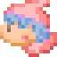
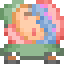
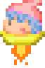
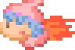
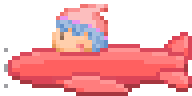
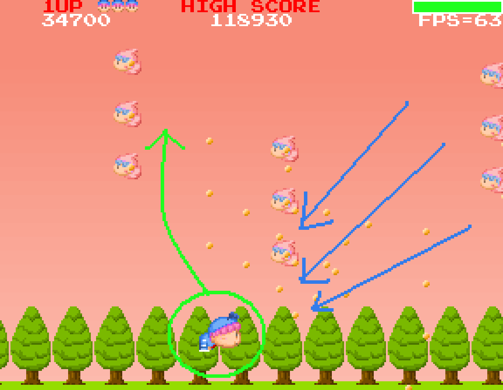

ムルモ屋本舗の300,000Hitを記念して制作したシューティングゲームです。
2008年制作という古い作品ではありますが、Flash Playerがインストールされていれば遊べるはず。下のマニュアルも参考にしながら、遊んでいただけたら幸いです(^^)。
『ムルムル』を遊ぶ
↑クリックすると、別ウィンドウでゲーム画面が開きます。
マニュアル
プロローグ
「何するんでしゅか～～っ」
「ムルモのマシュマロは全部あたちがもらったわ！
悔ちかったら取り返しに来なちゃい！」
「望むところでしゅ！」
遊び方
- マウスでムルモを動かします
- 左ボタンでしょっかくビームが出ます
- しょっかくビームで敵をやっつけよう
- 敵の落としたマシュマロを食べよう
- ボスを倒すとゲームクリアです
- 敵の攻撃を受けると残機が減ります
- 残機が０になるとゲームオーバー
敵キャラ紹介

パピィッピ

戦車パピィッピ

UFOパピィッピ

ジェットパピィッピ

戦闘機パピィッピ
高得点を目指そう
- 高得点をゲットしてランキングに名前を残そう！
- マシュマロを連続して食べると点数アップ
- ボスを倒した後のパピィキャッチは時間が経ってからキャッチすると高得点
- 夕方に変わる直前で35000点以上取れているのが理想です
アーケードモード
- 一度クリアするとアーケードモードが選べるようになります
- 敵の弾の数が多いので気をつけて
- ぜひアーケードモードのエンディングも見てくださいね
弾よけのコツ
- 弾の当たり判定は小さいです。当たりそうで意外と当たらないかも
- でも敵本体の当たり判定は大きいので要注意
- 敵はムルモに向かって弾を発射します。弾を一カ所に集めるようにおびきよせて、さっとかわそう

(2008/10/7)